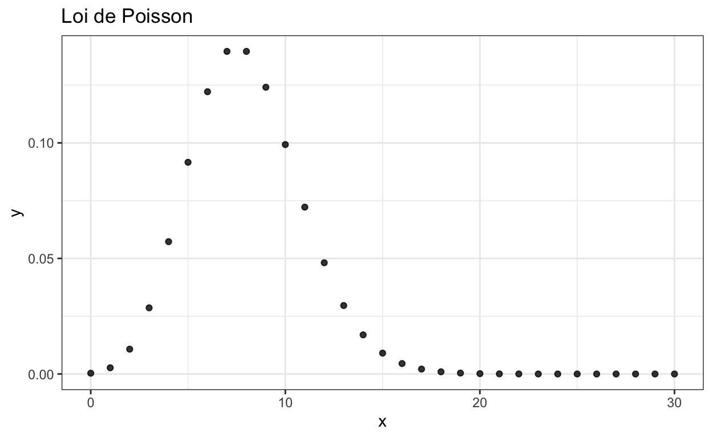
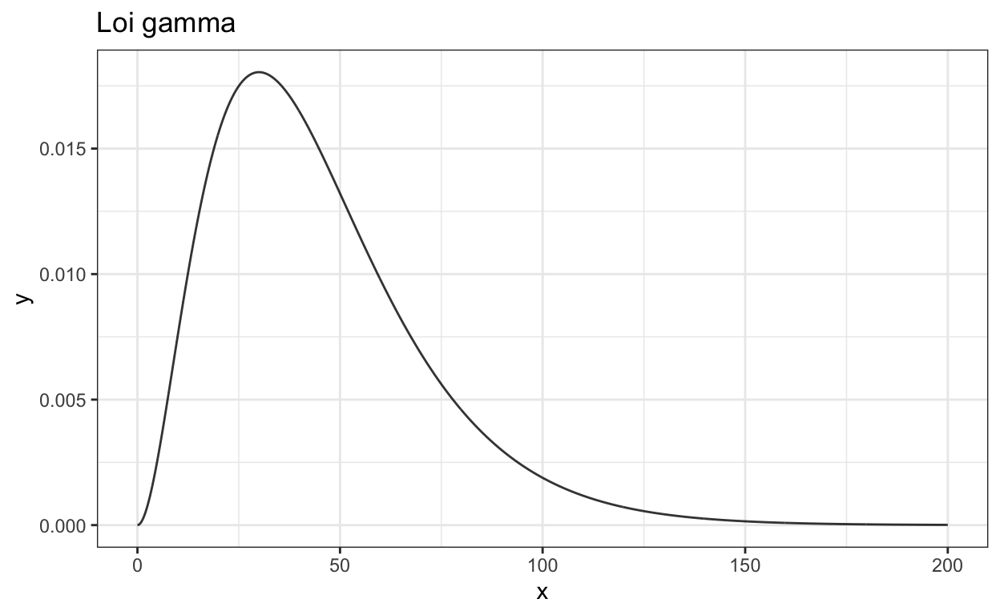

Dans ce premier exercice, nous cherchons à déterminer la loi a posteriori de la probabilité d’obtenir pile après avoir observé un certain nombre de tirages (cet abus de langage est dû au fait que le paramètre de la Bernoulli s’interprète comme la probabilité de l’évènnement “1”).
Le modèle est \(\mathcal{M}=\{Be(\theta), \theta\in[0,1]\}\). Il s’agit dans un premier temps de munir \(\{\Theta, \mathcal{F}\}\), l’espace probabilisable des paramètres, d’une mesure dite loi a priori : \[\begin{equation*} \pi(\theta)=\frac{\Gamma(\alpha+\beta)}{\Gamma(\alpha)\Gamma(\beta)}\theta^{\alpha-1}(1-\theta)^{\beta-1}, \theta\in[0,1], \alpha,\beta\in]0,+\infty[ \end{equation*}\] où \(\alpha\) et \(\beta\) sont les hyper-paramètres.
Question : calculer la loi a posteriori de \(\theta\) à un facteur proportionnel près.
Exercice : Calculer la densité de la loi a priori correspondants au support i.
i <- seq(0, 1, 1/1000)prior <-prior <- dbeta(...)prior <- dbeta(i, 1, 1)Exercice : Calculer la densité de la loi a posteriori correspondants au support i.
i <- seq(0, 1, 1/1000)posterior <- posterior <- dbeta(...)posterior <- dbeta(i, 53, 49)samples <- samples <- rbeta(...)samples <- rbeta(1000, 53, 49)Exercice : Afficher la loi a priori, la loi a posteriori et l’histogramme des tirages aléatoires sur un même ggplot. Attention, lorsque vous passez un indice, vous ne pouvez pas revenir dessus !
ggplot(....) + ...densities <- data.frame(x=...., y=....) %>%
tidyr::pivot_longer(cols=-x, names_to='type', values_to='value', values_drop_na=TRUE)tirages_p <- data.frame(samples=..., name='...')ggplot() +
geom_histogram(data=..., mapping=...) +
geom_line(data=..., mappint=...) +
labs(title='Samples vs density') +
theme_bw() +
xlab('x')densities <- data.frame(x = i, Prior = prior, Posterior = posterior) %>%
tidyr::pivot_longer(cols=-x, names_to='type', values_to='value', values_drop_na=TRUE)
tirages_p <- data.frame(samples = samples, name = 'Samples')
ggplot() +
geom_histogram(data = tirages_p, mapping = aes(samples, y = ..density.., fill=factor(name)),
alpha = 0.5, color = 'red', position = 'identity', bins = 30) +
geom_line(data = densities, mapping = aes(x = x, y = value, color=factor(type)),
alpha = 0.8) +
labs(title = 'Samples vs density') +
theme_bw() +
xlab('x') +
theme(legend.title = element_blank())On cherche à présent à compter les cigales présentes sur un terrain immense. Pour cela, on divise le terrain en 200 parcelles. La première année, trois parcelles sont parcourues, et on y recense les cigales. On obtient 63, 75 et 58 cigales. Il s’agit, à partir de ces résultats, de déterminer la loi du nombre de cigales sur le terrain.
Une loi fréquemment utilisée lorsqu’il s’agit de compter est la loi de poisson : \[\begin{equation*} P(X=k)=\frac{\lambda^k}{k!}e^{-\lambda}, k\in\mathbb{N^+}, \lambda\in]0, +\infty[ \end{equation*}\]
library(ggplot2, quietly = TRUE)
library(ggthemes, quietly = TRUE)
data <- data.frame(x=seq(0, 30, 1), y=dpois(seq(0, 30, 1), 8))
ggplot(data=data, mapping = aes(x = x, y = y)) +
geom_point(alpha = 0.8) +
labs(title = 'Loi de Poisson') +
theme_bw()
Comme précédemment, il s’agit dans un premier temps de munir l’espace des paramètres d’une loi a priori que l’on choisit conjuguée : la loi Gamma. Celle-ci possède la densité suivante : \[\begin{equation*} \pi(\lambda)=\frac{\lambda^{k-1}e^{-\frac{\lambda}{\theta}}}{\Gamma(k)\theta^k}, k,\theta\in]0,+\infty[, \lambda\in[0,+\infty[ \end{equation*}\] où \(\theta\) et \(k\) sont les hyper-paramètres. Notez que la loi Gamma est également utilisée avec d’autres paramétrisations (cf. wikipedia)…
data <- data.frame(x=seq(0, 200, 2/10), y=dgamma(seq(0, 200, 2/10), shape=3, scale=15))
ggplot(data=data, mapping = aes(x = x, y = y)) +
geom_line(alpha = 0.8) +
labs(title = 'Loi gamma') +
theme_bw()
Question 1 : calculer la loi a posteriori de \(\theta\) à un facteur proportionnel près pour les parcelles données. On suppose \(k_0=3\) et \(\theta_0=15\).
Question 2 : affichez la densité de la loi a priori et a posteriori pour le support \(x\). On suppose \(k_0=3\) et \(\theta_0=15\).
x <- seq(0, 200, 2/10)prior <-dgammaprior <- dgamma(seq(0, 200, 2/10), shape=3, scale=15)posterior <-dgammaposterior <- dgamma(seq(0, 200, 2/10), shape=199, scale=15/46)# le plotdensities <- data.frame() %>%
tidyr::pivot_longer()ggplot() +
geom_line(...) +
labs(title = 'Gamma density') +
theme_bw() +
xlab('x') +
theme(legend.title = element_blank())densities <- data.frame(x = x, Prior = prior, Posterior = posterior) %>%
tidyr::pivot_longer(cols=-x, names_to='type', values_to='y', values_drop_na=TRUE)
ggplot() +
geom_line(data = densities, mapping = aes(x = x, y = y, color=factor(type)),
alpha = 0.8) +
labs(title = 'Gamma density') +
theme_bw() +
xlab('x') +
theme(legend.title = element_blank())Question 3 : Quelle est la loi du terrain entier (indice : cf. wikipedia) ? Afficher la densité a priori et a posteriori du terrain entier.
Réponse 3 : Soit \(X_i\) un ensemble de variables aléatoire suivant une loi gamma de paramètre \(k\) et \(\theta\). La loi de \(Y=\sum_iX_i\) est une loi gamma de paramètres \(k^\prime=\sum_i k\) et \(\theta^\prime=\theta\).
x <- seq(8000, 14000, 1)
densities <- data.frame(
x=x,
prior=dgamma(x, shape=3 * 200, scale=15),
posterior=dgamma(x, shape=199*200, scale=15/46)
) %>% tidyr::pivot_longer(cols=-x, names_to='type', values_to='y', values_drop_na=TRUE)
ggplot() +
geom_line(data = densities, mapping = aes(x = x, y = y, color=factor(type)),
alpha = 0.8) +
labs(title = 'Gamma density on the whole field') +
theme_bw() +
xlab('x') +
theme(legend.title = element_blank())Dans ce troisième exercice, nous allons réaliser des relevés de températures. Ici, la loi normale de moyenne à déterminer mais de variance connue sera utilisée : \(\mathcal{N}(\mu, \sigma^2)\). Une mesure a priori est la loi normale elle-même : \[\begin{equation*} \pi(\mu)=\mathcal{N}(\mu_0, \sigma_0^2),\mu_0\in\mathbb{R}, \sigma_0\in\mathbb{R}^+ \end{equation*}\] Rappelons dans un premier temps la forme de la loi normale : \[f(x;\mu,\sigma)=\frac{1}{\sqrt{2\pi\sigma^2}}\textrm{exp}\Big(-\frac{(x-\mu)^2}{2\sigma^2}\Big).\]
Question 1 : Sachant que nous avons relevé les valeurs \(22\), \(23.5\), \(22\), \(24.5\), \(25\), proposez une loi a posteriori et affichez la densité de la loi a priori et a posteriori.
Question 2 : Affichez dans ggplot la loi a priori et a posteriori.
avg = (22+23.5+22+24.5)/4
N=4
sigma_0=10
sigma=3
mu_0=15
mu_prime <- N*sigma_0^2/(N*sigma_0^2+sigma^2)*avg+sigma^2/(N*sigma_0^2+sigma^2)*mu_0
sigma_prime <- sigma^2*sigma_0^2/(N*sigma_0^2+sigma^2)
x <- seq(-5, 35, 0.1)
prior <- dnorm(x, mean=mu_0, sd=sigma_0)
posterior <- dnorm(x, mean=mu_prime, sd=sigma_prime)
densities <- data.frame(
x=x,
prior=prior,
posterior=posterior
) %>% tidyr::pivot_longer(cols=-x, names_to='type', values_to='y', values_drop_na=TRUE)
ggplot() +
geom_line(data = densities, mapping = aes(x = x, y = y, color=factor(type)),
alpha = 0.8) +
labs(title = 'Normal density') +
theme_bw() +
xlab('x') +
theme(legend.title = element_blank())